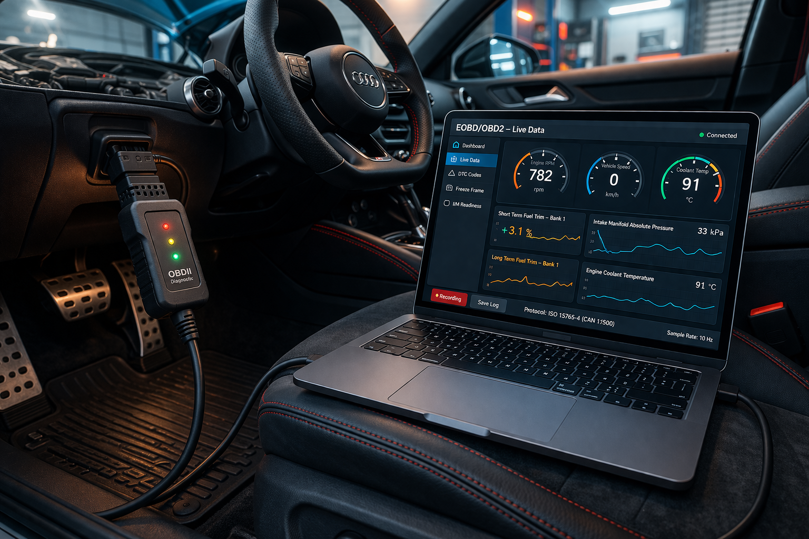
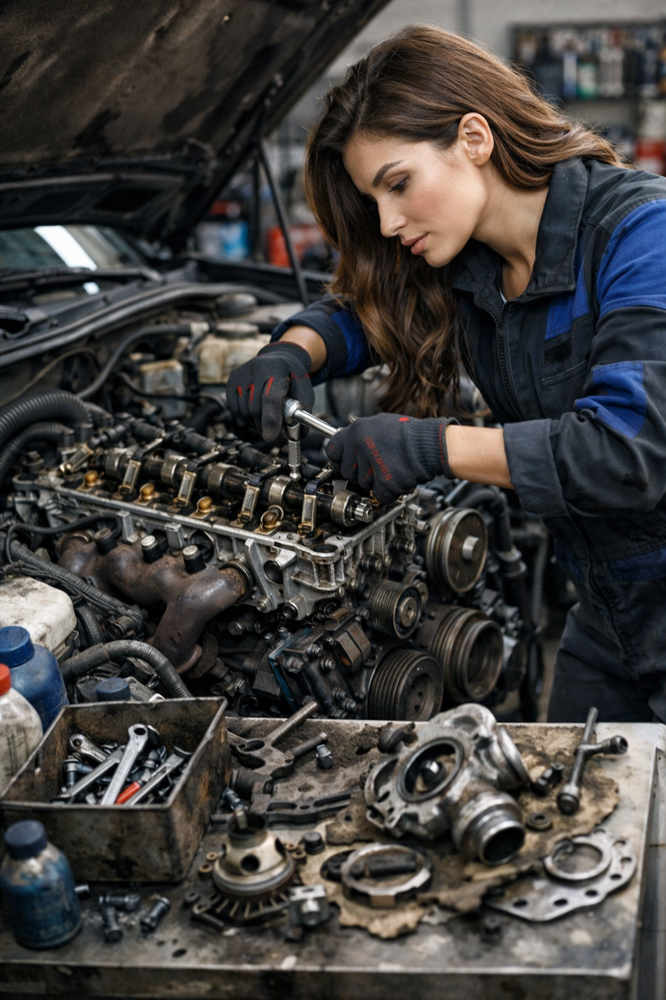

Diagnostyka komputerowa
Oferujemy precyzyjną diagnostykę komputerową, która pozwala szybko wykryć źródło problemu w Twoim samochodzie. Dzięki nowoczesnym narzędziom jesteśmy w stanie odczytać błędy, przeanalizować parametry pracy silnika oraz zlokalizować usterki, zanim doprowadzą do poważniejszych awarii.
- Odczyt i kasowanie błędów ECU
- Diagnostyka silnika, ABS i poduszek powietrznych
- Analiza parametrów pracy pojazdu w czasie rzeczywistym
- Wykrywanie ukrytych usterek i spadków wydajności


Naprawa silnika
Kompleksowo zajmujemy się naprawą silników wszystkich marek i modeli – zarówno benzynowych, jak i diesla. Diagnozujemy usterki, usuwamy awarie oraz przeprowadzamy pełne remonty jednostek napędowych.
- Wymiana i regeneracja podzespołów
- Naprawa głowicy i uszczelek
- Usuwanie wycieków i spadków mocy
- Kontrola i diagnostyka silnika